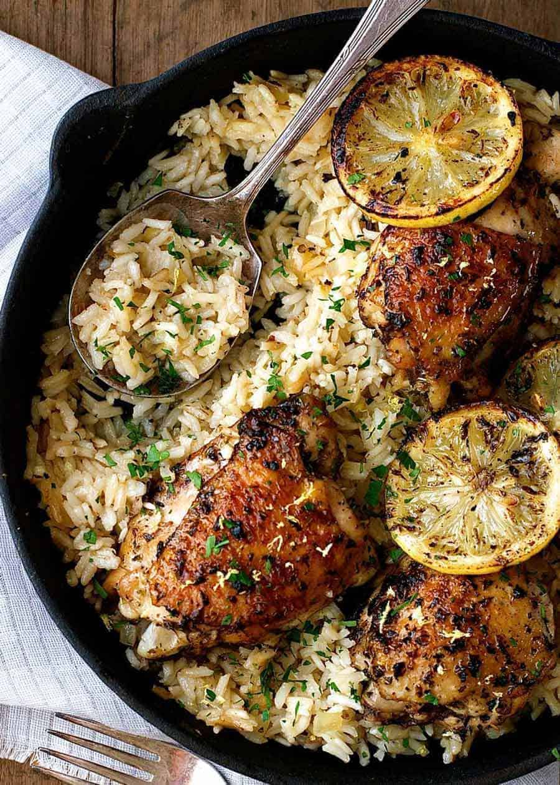

Chicken and rice

Description
Ingredients
- 3 large chicken breasts
- 1 cube of butter
- Salt and pepper
- 1 cup of rice
- Olive oil
- Vegetable seasoning
Steps
- Wash your 40g of rice in a bowl of water
- Add your 1 cup of rice with 1 and a half cups of water into a pot with the vegetable seasoning
- Cook the pot of rice at medium-low heat for 20-30 minutes
- Add a few drops of olive oil to a frying pan
- Slice your chicken breasts into into sizes of your liking
- Season both sides of each piece with salt and pepper
- Place your chicken pieces onto the frying pan and cook on medium heat for ~20 minutes
- After 12 minutes add your cube of butter to the pan and cover the chicken with the mixture
- Serve both the chicken and the rice on a plate and enjoy!
Home